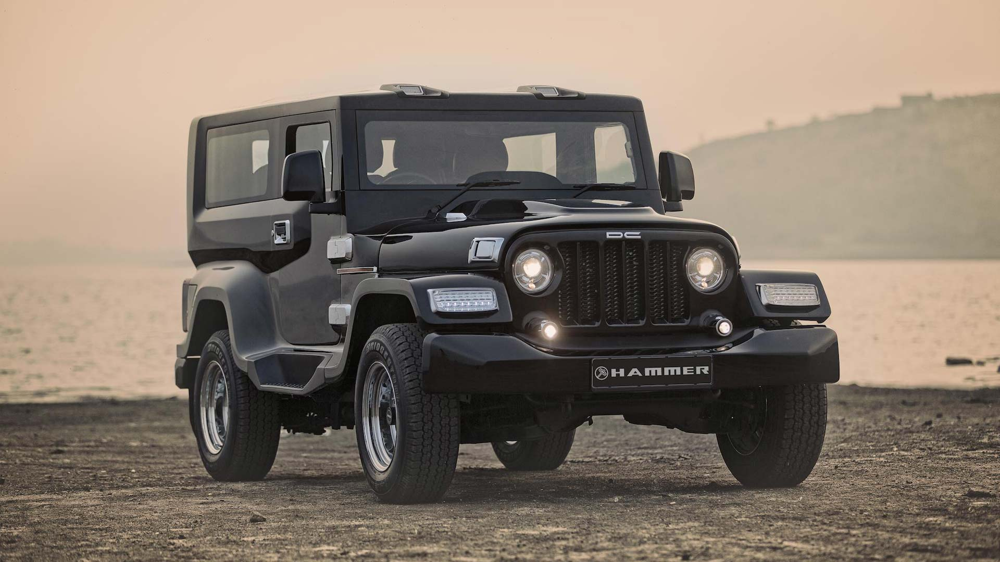

The Mahindra Thar is a compact, four-wheel drive, off-road two-door SUV manufactured by Indian automaker Mahindra and Mahindra Ltd It was introduced in October 4, 2010 and replaced the Mahindra Major. It is the latest iteration in Mahindra's line of licensed CJ-3B Willys Jeep based off-roading oriented vehicles.
Named after the Thar Desert, Thar was first introduced in 2010 as a modernized version of the Mahindra Major, which was based on the Mahindra MM540, which was in production in India since the 1980s. The Thar was designed to be a rugged, reliable, and affordable off-road vehicle that could handle the rough terrain found in many parts of India. Its design is based on the Jeep CJ series, which Mahindra had been producing under license since the 1940s. 